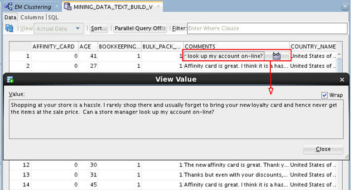
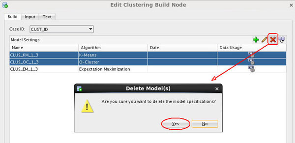
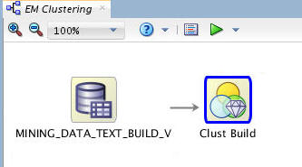

Create
a Data Miner Workflow for Text Mining
Create
a Data Miner Workflow for Text Mining Before You Begin
Before You Begin
This 15-minute tutorial shows you how to create a new workflow that performs text mining activities.
Background
In addition to the existing k-Means and O-Cluster algorithms, Oracle Data Mining now supports Expectation Maximization, a clustering algorithm that creates a density model of the data. The density model allows for an improved approach to combining data originating in different domains. For example, EM enables combination of structured data (such as sales transactions and customer demographics) with unstructured data, such as text data.
What Do You Need?
- Oracle Database 19c Enterprise Edition
- Oracle SQL Developer version 19.x
- Oracle Data Miner User Account
- ABC Insurance Project
 Create
a Workflow and Add a Data Source
Create
a Workflow and Add a Data Source
- Right-click your project (ABC Insurance) and select New Workflow from the menu.
- In the Create Workflow window, enter EM Clustering as the name and click OK.
- In the Components tab, drill on the Data category, drag and drop a Data Source node on the workflow, and select MINING_DATA_TEXT_BUILD_V from the Available Tables/Views list in the wizard.
- Click Finish to complete the data source node definition and close the wizard.
- Right-click the data source node and select View
Data from the menu.
A tabbed window for the data source appears then enables you to browse the data.
- Select the first record in the COMMENTS column.
The View Value window appears (as well as the sunglasses icon).
- Click the Wrap option to display the entire comment.

Description of the illustration display-comment.jpg This column contains customer feedback that we want to use in our text mining exercise.
- Select the first record in the COMMENTS column.
- Close the View Value window.
- Dismiss the MINING_DATA_TEXT_BUILD_V window.
- Save the workflow.
 Create
the EM Clustering Model
Create
the EM Clustering Model
Clustering models may be used to predict the groups (clusters) that categorize specified input attributes. In this scenario, you want to predict the cluster that a customer is most likely to belong to based on customer feedback.
By default, Oracle Data Miner selects all of the supported algorithms for a selected model. Here, you modify a Clustering node to use only the Expectation Maximization algorithm for the model. Then, you will enable text mining within the model.
- Expand the Models category in the Components tab.
- Drag and drop the Clustering node from the Components tab to the Workflow pane.
- Right-click the data source node, select Connect from the pop-up menu, drag the pointer to the Clust Build node, and release.
- Double-click the clustering build node to display the Edit Clustering Build Node window.
- In the Build tab, choose a Case ID value and remove the
K-Means and O-Cluster algorithms, by doing the following:
- Select CUST_ID as the Case ID value.
- Select both the K-Means and O-Cluster algorithms as shown below.
- Click the Delete tool (red "x"), and then click Yes in the warning dialog to remove the two algorithms from the Model Settings list.

Description of the illustration delete-models.jpg - Select the Input tab.
- Deselect the Determine inputs automatically option.
- Modify settings for two of the input attributes: COMMENTS
and PRINTER_SUPPLIES:
- Select the COMMENTS attribute, and click the Categorical icon in the Mining Type column. Then use the pop-up menu to change the Mining Type from Categorical to Text.
- Select the PRINTER_SUPPLIES attribute and click the Input icon (green arrow). Use the pop-up menu to select Ignore.
- Click OK in the Edit Clustering Build Node window to save your changes

 Next Tutorial
Next Tutorial
In the next tutorial, you'll build the EM clustering model against the source data. Once the model is built, you view and evaluate the results.